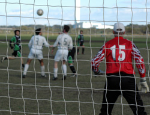
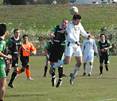

|
Misato, Sun 12th Nov. Spirits high after their comfortable win over bottom-of-the-tabke Jetro in the quagmire of Oi Mud, Sala travelled this week to windy Misato to take on the all-conquering top-of-the-table Hibs. Sala had reason to be apprehensive heading into the match after conceding an astonishing total of 16 goals in the last two encounters between the two sides. Preparations weren`t helped when playmaker Shige again ventured to the wrong ground. In the absence of defensive stalwart Clarkey and strikers Roddy Charles and Giles Legg, Guido opted for a cautious approach, employing an unfamiliar 5-4-1 formation, leaving the tireless Toby Long up front by himself.
Guido is well-known for his relentless attack on the ball, his astute tacticts and his ability to lead by example but he is also an excellent motivational speaker. This week his pre-match speech contained a barage of bad language, inspiring his troops who came out hungry for victory from the word go. Lenny was the one exception, however. Taking offence to such vulgarities he decided to start on the bench allowing Aussie teen-sensation Peter to take his place on the left side of midfield.
Hibs had most of the early possesion and were camped inside Sala`s half for most of the first half but the Sala defense led by tough-tackling Brian Gallagher and shrewd Columbian Andres soaked up most of the pressure. Guido, playing the sweeper role to perfection, mopped up whatever else got through. Toby battled hard, chasing down every ball, and even drew a save from the keeper on one of the rare occasions Sala ventured deep into Hibs` half. Hibs` possesion eventually paid off as they found the breakthrough after about half an hour. After some good build-up substitute Steve Morris controlled the ball well on the edge of the box and fired a shot that keeper Sid Lloyd got a hand to but could only parry into the net. The big man made up for it five minutes later coming off his line to deny a Hibs striker who had been put clean through on goal. It was an crucial save meaning that at 1-0 down at half time Sala were still in the game.
It was decided that the 100 knot gale blowing across the park was slightly in Sala`s favour in the second half and with this in mind Guido switched to a 4-4-2, Bedingfield coming on to partner Toby in attack. The second half took on a different complexion with Sala gradually gaining the ascendancy in midfield. This was helped by the belated appearance of Shigeru who found plenty of space in the middle. Toby had the chance to equalize after being put through by a Bedingfield header but just pulled his volley wide. The two linked up again minutes later and this time Toby`s header grazed the cross bar. By this time Sala were enjoying most of the possesion. Hibs forays forward were negated by the everpresent Yusuke at the back and defense was being turned into attack. A series of Brookie corners finally led to the equalizer. One such corner was cleared initially by the Hibs defensive but Brookie floated in another cross to the backpost finding Bedingfield who headed home with relative ease.
At 1-1 it was Sala who looked more capable of picking up the three points. Brookie received the ball in acres of space inside the box and probably had too much time to find his target, hitting the ball straight at the keeper. Andres fired over the bar from outside the box and Toby, who might`ve had a hatrick on another day, volleyed over the bar from the edge of the six yard box. In the end Sala had to settle for a well-earned point.
Guido continued his tirade of expletives after the match, urging his players to maintain this kind of form through the busy pre-Christmas schedule. Everyone left the ground inspired and invigorated after this rare outburst of crudeness. Everyone, that is, but Lenny who left Misato thoroughly disgusted.
Man of the Match: Yusuke. Turning into a fine centre half. Special mentions to Toby and Andres who battled hard all day in difficult conditions.
Report by Dhugal Beddingfield.
|